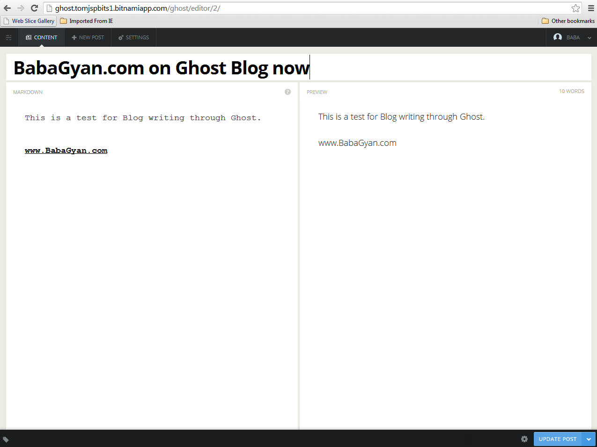

Exploring Cloud platform on Google
Exploring Cloud platform on Google requires us to enable billing in Google Cloud Console settings. However, Bitnami was free for an hour. Last time we looked at Bitmami cloud service and Ghost blog. It has been a busy 8-10 weeks and mostly dealing with Google Cloud Platform (GCP).
Google Cloud has below products:
Google Compute Engine (GCE)
Google App Engine (GAE)
Google Cloud SQL
Google Cloud Storage
Google Cloud Datastore
Google BigQuery
Google Cloud DNS
Google Cloud Endpoints
Google Translate API
Google Prediction API
Google Deployment Manager
Google Cloud SDK
I have been creating Virtual Machines (VM) for own purposes on Bitnami, AWS, Google, etc. For this, I found that while Bitnami was absolutely easy to start with, Google was touch difficult. However, the amount and quality of documents available for Google was superb.
To create and manage a VM on Google, we need below resources:
Google Compute Engine (GCE) Local Unix/Linux system OR Windows system with Cygwin Python Google Cloud SDK VNC Viewer on local system
To create a VM, navigate to https://console.developers.google.com. There you will find "Compute Engine" on left navigation panel. Click open the Compute Engine and from each next sub-tabs, you can create a VM, add disk to it, take snapshots, write network rules, perform load balancing, etc.
Once the VM is up and running, you need to use GCUTIL from google cloud sdk to access the VM. You can the ssh into the vm and start VNC server. Once VNC server is up and running, you can easily access the VM's UI from VNC viewer and do additional activities that you want to perform.
Soon enough, we will probably look at Amazon Web Services. Then we can have enough things ready for a comparison of the Cloud compute service providers. If possible, we will look at few more providers.
Google BigQuery
Google Cloud DNS
Google Cloud Endpoints
Google Translate API
Google Prediction API
Google Deployment Manager
Google Cloud SDK
I have been creating Virtual Machines (VM) for own purposes on Bitnami, AWS, Google, etc. For this, I found that while Bitnami was absolutely easy to start with, Google was touch difficult. However, the amount and quality of documents available for Google was superb.
To create and manage a VM on Google, we need below resources:
Google Compute Engine (GCE) Local Unix/Linux system OR Windows system with Cygwin Python Google Cloud SDK VNC Viewer on local system
{kind=link}
To create a VM, navigate to https://console.developers.google.com. There you will find "Compute Engine" on left navigation panel. Click open the Compute Engine and from each next sub-tabs, you can create a VM, add disk to it, take snapshots, write network rules, perform load balancing, etc.
Once the VM is up and running, you need to use GCUTIL from google cloud sdk to access the VM. You can the ssh into the vm and start VNC server. Once VNC server is up and running, you can easily access the VM's UI from VNC viewer and do additional activities that you want to perform.
Soon enough, we will probably look at Amazon Web Services. Then we can have enough things ready for a comparison of the Cloud compute service providers. If possible, we will look at few more providers.
ETL BI BigData Past Future
ETL BI BigData Past Future
Earlier, many a man years ago, there were only financial application that were used to perform transactions and log data into the database. Then came the applications to cater needs of Industries and hence begun the big volume data storage, backups and history in form of data. It was prominent even in case of financial applications, but not so visible because Financial firms were not as BIG as Industries.
The applications for industry got the term such as ERP.
Now, arise the question, why to store loads and loads of data? Can that be brought to some use? and How? This was the inception of Business Intelligence and an obvious process of Extraction Transformation and Loading (ETL).
This has, from a long time, resulted in many technologies and also jobs in the field of ETL and BI.
Now, after being a niche field for so many years, ETL + BI field has entered a transformation with addition of Big Data compliments.

The transformation has been the result of many things - Internet, discovery of various data sources in various formats such as machine logs, social website data, network logs. Then, there has been huge progress in the field on in-memory database processing and cloud computing making analysis of unbelievably huge data possible.
What was ETL and Bi is now ETL + BI + BigData + Data Mining + Data Analytic + so on and on.....
Here is a list of technologies - incomplete list but a list never-the-less
1. Technologies such as SAP BW (SAP NetWeaver Business Intelligence), SAP BO (SAP Business Objects/ Business Intelligence 4.0), Xcelsius, SAP HANA from ERP leaders SAP,
2. Oracle reports, Oracle Business Intelligence, Oracle forms, Oracle WareHouse Builder from database leaders Oracle
3. Infosphere DataStage, Cognos from mighty IBM
4. SQL Server services - SSIS. SSRS. SSAS as a part of MSBI from Microsoft
5. TeraData, SAS, Ab Initio, Microstrategy,
6. Latest in the area - Tableau, QlikView, Spotfire (Tibco), Sybase IQ, Siebel,
7. Technologies like R systems, Python, Php - all are also becoming a part of new form of ETL + BI + BigData
Soon, you will see some more projects demonstration on BabaGyan.com on BigData, Data Mining, Text Mining and many more. Stay tuned.
Types of data
Types of data
We so much talk about data all the time - do we all know in how many types data can be categorized based on its structure?
I am trying to compile a similar categorization for data around which ETI, BI, BigData & DataAnalytics have evolved
Structured data
This is the base of all the database systems which have dominated the market of the ETL and BI industry for so many years. The structured data refers mainly to the relational database where all the key structures and associations are well defined and also all dimensional data is properly associated with facts.
Semi-structured data
Data in the form of excel sheets, presentations, etc which can be used as structured data to some extend for analysis but automation for direct access is not so easy. It basically would need to be somehow turned into structured data and then analysed.
Syndicated data
Home away, Thompson Reuters, etc. which provide special data in their own formats for analysis are bucketed under the category of Syndicated data.
Unstructured data
Logs from systems and devices, social media data such as twitter and facebook. Even though one may have a feel to turn this data into structured data for analysis, the volume and frequency of unstructured data makes it nearly impossible to be converted to structured data for analysis in terms of feasibility and impact. So, unstructured data is analysed using different methods and tools.
The one that will soon be published on BabaGyan.com uses Python and R language in combination with Php, MySql and HTML5 too.
BabaGyan.com Exploring Ghost Blogging platform on Bitnami
BabaGyan.com Exploring Ghost Blogging platform on Bitnami. Ghost is free, open source blogging platform based on Node.js. It is maintained on Bitnami so I decided to visit bitnami and try it to post something on BabaGyan.com via Ghost. Simple review - Good to start :)
It was fun and project :)
Here are some screens:
This is the Editor

{kind=link}
{kind=link}
{kind=link}
{kind=link}
{kind=link}
Also Read
- Case Study: Multiply Revenue as well as Customer Base
- Tool: Project Stages Tracker
- Exploring Cloud platform on Google
- BabaGyan.com Exploring Ghost Blogging platform on Bitnami
- Solutions for issues faced during hadoop configuration
- Hadoop and Ubuntu - step 4
- Hadoop and Ubuntu - step 3
- Hadoop and Ubuntu - step 2
- Hadoop and Ubuntu - step 1
- Usage of Hadoop
- Hadoop architecture birdview
- Pros and Cons of Gmail displaying images in your emails
- CLT20 2013 Twitter Analysis
- ETL BI BigData Past Future
- Tool: Daily Expense Tracker
- Lifesaver: Ways to create a website
- LifeSaver: Business Intelligence Projects - Success and Failures
- LifeSaver: Differences between UDT and IDT
- Data Quality in ETL and BI
- Problem Solving Methodology
- What is Mentoring
- QlikView advantage over query based BI
- Types of data
- Lyrics One Two Three Four Chennai Express
- QlikView Licensing - an Overview
- Theme song lyrics - Baba jee ki booti
- TV - OLED vs LED vs LCD vs Plasma
- Review Google Moto X
- Review: Blackberry Q10 and Blackberry Q5
- Lifesaver - SSRS All in one
- Lifesaver - SSIS All in one
- Lifesaver - SSAS MDX Quick fixes
- Lifesaver - SSRS Quick fixes
- SSIS Package Variables, Script and Profiling
- Lifesaver - SSIS Quick fixes
- SSIS Control Flow Containers
- SSIS Control Flow Objects
- SSIS Exercise 05
- SSIS Exercise 04
- SSIS Exercise 03
- SSIS Exercise 02
- SSIS Exercise 01
- Theme song lyrics - The Big Bang Theory
- Theme song lyrics - F.R.I.E.N.D.S
- SQL - Aggregate & Analytic functions
- SQL - List of Analytical functions
- SQL - Where, Operators and alias
- SQL - Structured Query Language for Database quering